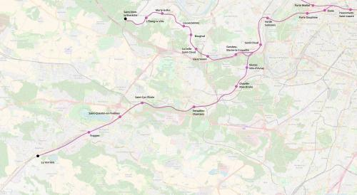

RER E Saint-Quentin-en-Yvelines
RER E Saint-Quentin-en-Yvelines
Haussmann-Saint-Lazare - La Verrière
Une extension de la ligne E du RER.
Le RER E sud-ouest serait une connexion entre le centre des Hauts-de-Seine, Saint-Quentin-en-Yvelines et le quartier d'affaires de Saint-Lazare. Le tracé traverserait le Bois de Boulogne pour atteindre la Seine au niveau du Pont de Suresnes ensuite la desserte suivrait le tracé du transilien U entre Saint-Cloud et Trappes. Le terminus serait ensuite à La Vérrière ou Élancourt-France-Miniature.
Variante de Versailles Rive-Droite
Suite au suggestion d'un commentateur, nous mentionnons l'idée de tracer le RER E par la ligne de la rive-droite et une nouvelle ligne qui contournerait le château de Versailles par le nord et parsserait à travers le parc de Versailles pour rejoindre Saint-Cyr et Saint-Quentin-en-Yvelines.
Voir les autres projets associés à cette ligne
Carte

Cliquer pour agrandir
Si ce projet vous intéresse n'hésitez pas à le (re-)partagez sur les réseaux sociaux ou par courriel ou à en parler autour de vous.
Si vous souhaitez travailler à la concrétisation de ce projet, passez à l'action et contactez nous.
Commenter